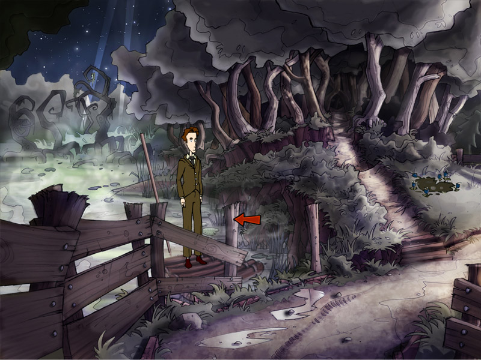

campfire3

woods
Look at woods (main)
campfire3_000
nathan: It's dark in there.
Enter woods (main)
campfire3_001
nathan: I should use the path.
swamp_raft
Look at raft (main)
campfire3_002
nathan: It's a log raft that I can use to venture into the swamp with.
puddle
Look at puddle of mud (main)
campfire3_003
nathan: A puddle of mud.
Talk to puddle of mud (main)
campfire3_004
nathan: I'm not in the mood to eat dirt.
Use puddle of mud (main)
campfire3_005
nathan: This is not the time for mud baths.
swamp
Look at eerie swamp (main)
campfire3_006
nathan: It's kinda creepy how the water seems to glow with an energy of its own.
Enter eerie swamp (main)
campfire3_007
nathan: I'll need to use the raft.
campfire
Look at campfire remains (main)
campfire3_008
nathan: Seems like this fire has been doused only a short time ago. The logs are still glowing hot.
Use campfire remains (main)
campfire3_009
nathan: Knowing my luck, I'd probably burn myself if I messed with it.
campfire remains (main)
campfire3_010
nathan: Good idea, but these torches will need to be soaked in some kind of lamp oil before their wicks will burn.
campfire remains (main)
campfire3_011
nathan: Alright, the embers lit the torches on fire!